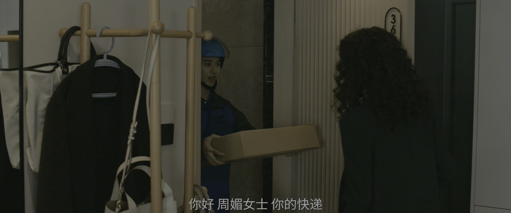
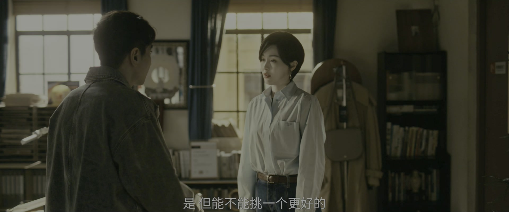
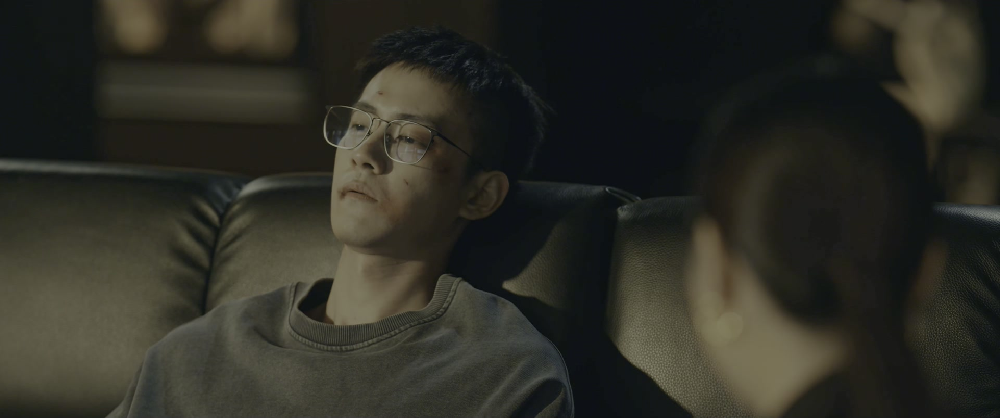
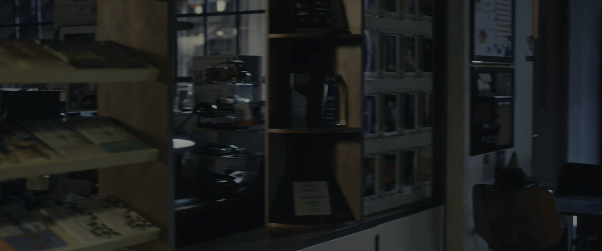
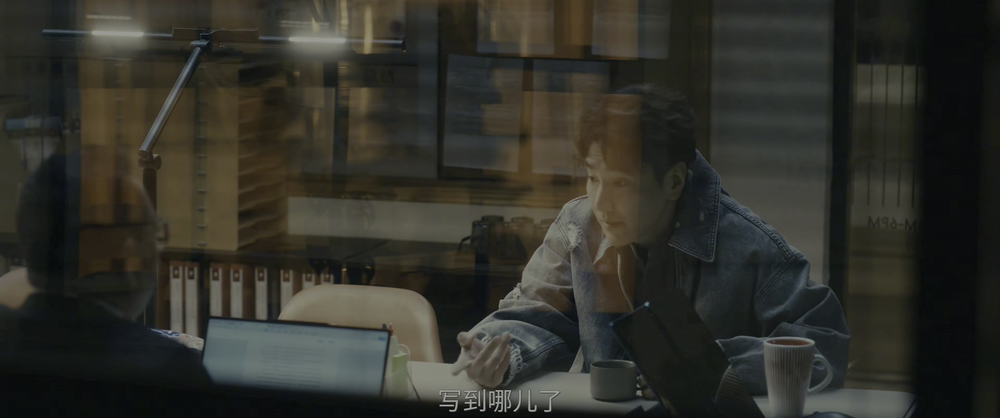
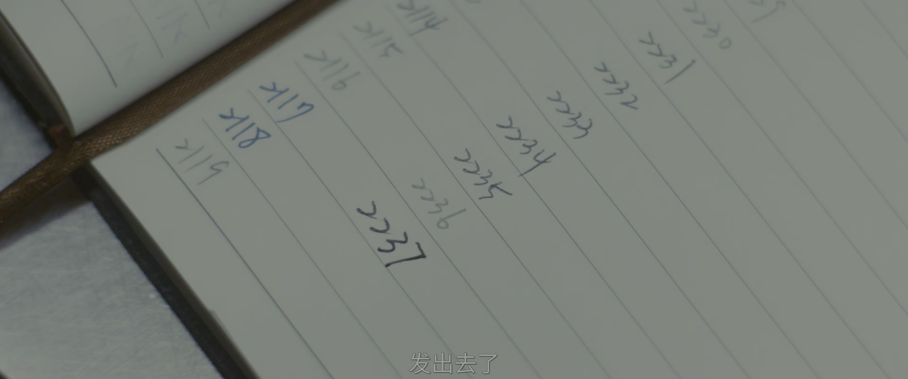
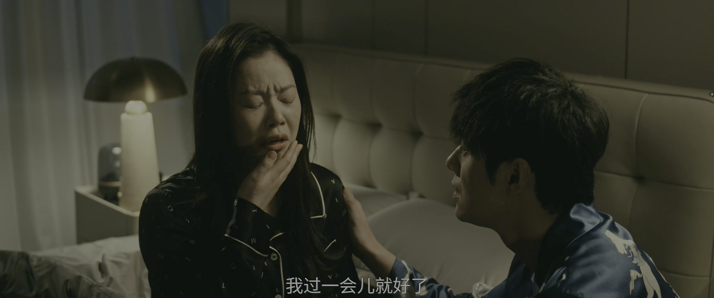
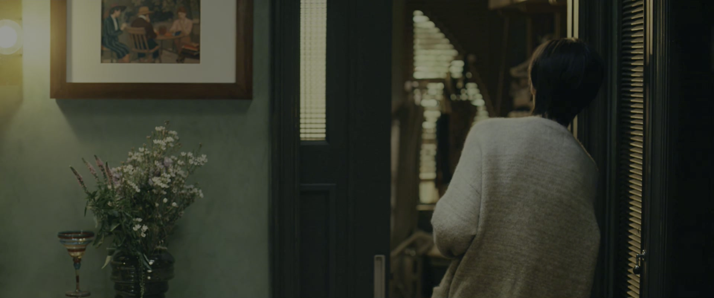

真正的劝阻，是连后果都替你算清楚
情境：何韩连夜读完《山鬼令》劝展翘收手，把机会成本一笔笔摆给她看。
遇到这种情况，可以这样做
- 劝阻不是泼冷水，是把对方没算过的账算清楚。
- 一句「加油」比十句「别怕」更有分量。
- 在乎一个人，才敢对她说难听的真话。
Drama Recap · 剧情图文总结
第 30 集 · 背水一战
何韩看完《山鬼令》连夜劝展翘收手：「那不是孤烟，差远了。」赵兰心却要官宣三三就是孤烟，房子、电竞馆都是筹码；展翘把最后的钱和力气砸向《山鬼令》，深夜大哭，何韩第一次见她哭成这样：「你不如拿下孤烟，那我们就是最好的。」而顶麒网已经放话：「给林展翘一天的时间吧——希望越大，失望就越大。」
深夜，何韩合上《山鬼令》的稿子：这不是孤烟，这也不是一个有机会的题材。但展翘说，我还剩下一些钱和很多力气，我要把它们做最后一次努力。城市的另一边，赵兰心对孤烟亮出底牌：三三会成为你的另一个笔名，点击榜前两位都将是你的作品——而那间电竞馆、这套房子，都捏在她手里。周媚决定跟贝律师结婚，向母亲宣战。所有人都站在自己的选择前，等天亮。
第30集，茞星背水一战。 展翘把辞职员工的疑云翻篇，团队上下全员为《山鬼令》加班宣发，「咱们这也算是尽了全员之力」。展翘当面见到《山鬼令》的新作者：「万一赌赢了呢，我不就有可能成为咱们茞星的合伙人？」两人达成共识——作者带着《山鬼令》与茞星共进退，在不变人设的基础上埋头存稿。
剧里的鸡毛蒜皮，往往是人生的缩影。这些情节不只是故事——当你在现实中遇到同样的处境时，它们能提醒你：先做什么、别做什么、怎么说才有效。
情境：何韩连夜读完《山鬼令》劝展翘收手，把机会成本一笔笔摆给她看。
情境：展翘说《山鬼令》除了作者没人有信心，但如果她也动摇，这事就真没法做了。
情境：赵兰心给孤烟三三的笔名、房子和电竞馆，条件是他的数据只能一路向上。
情境：展翘没有开口，何韩深夜替《山鬼令》作者改稿，还说是「展翘让我来的」。
情境：深夜收车，展翘第一次在何韩面前哭得收不住。
情境：周媚决定用结婚反抗母亲：「她要是看到我退，她就会进。」

茞星办公室里人来人往：有人替展翘张罗新居的事——「你跟林展翘的事就是我的事，你们的房子是我的责任」；快递也送到，「你好，周媚女士，你的快递。」
电话里，一个朋友邀她下月5号陪自己去好友的婚礼：「到时候我想隆重地把你介绍给大家认识。」展翘应下来，正要挂电话，对方补了一句：「还有件事，你妈约了我下午见面。」
关键台词 · KEY QUOTES

贝文祺与周媚妈妈当面摊牌。他坦承：「我爱周媚，从我第一眼看到她开始，我就爱上她了。我经过犹豫之后，依然选择了离婚。」周母指责他的所作所为会把周媚置于世人耻笑的境地，贝文祺反问：周媚从小到大最大的耻笑，正是母亲她自己。
贝文祺郑重警告周母：「请您不要再伤害她了，不管是肢体上还是言语上。如果当着我的面，我一定会竭力阻止您；如果我听说了，我也会保留所有的证据，必要的时候我会起诉您。」
关键台词 · KEY QUOTES
周媚妈妈以死相逼：「你要是非得嫁给这个跟你父亲有一样德性的男人，我就死给你看。」贝文祺寸步不让：「你让我去问问他，他打算怎么死，什么时候死？是在收到我结婚请柬的时候，还是在我领证的时候，还是在我的婚礼上？」
周媚被吓住，和贝文祺商量把婚事缓一缓。「我特别希望你能够嫁给我，但以现在这种情况，我可以一直等下去。」周媚不甘：「我要是不结这个婚的话，他是不是就觉得我怕了他，他可以一直拿他的命来恐吓我。」
关键台词 · KEY QUOTES
茞星团队全员为《山鬼令》宣发加班：「咱们这也算是尽了全员之力，全力以赴！」展翘也在办公室第一次见到了《山鬼令》的新作者——「万一赌赢了呢，我不就有可能成为咱们茞星的一个合伙人？」
展翘叮嘱他：在不偏离人设和基础大纲之上使劲存稿。「我要确保在必要时有爆炸性的稿件，这有利于你的冲榜，也有利于我们做站位的宣传。有信心吗？」「有。」
关键台词 · KEY QUOTES

何韩连夜把《山鬼令》和作者的其他小说都翻了一遍，专程来劝展翘：「他不是孤烟，差远了。《山鬼令》也不是一个有机会的题材。其他小说如果是一成机会，他即使是两成，也基本上是没机会的。你花这么大力气把钱投进去，如果不见效果，对你跟茞星都是巨大的打击。」
展翘不松口：「我现在还剩下一些钱，然后我还有很多的力气。除了作者有信心之外，没有人有信心，但如果在这个时候我也表现出没有信心的话，那这事就真的没法做了。」何韩看着她，只留下一句：「加油。」
关键台词 · KEY QUOTES

赵兰心与孤烟碰面，把筹码一件件摆上桌：「我们很快就会宣布，三三会成为你的另外一个笔名，目前点击榜前两位的作品都是你写的。」房子是公司租的，「一旦你的点击率掉下来，你的人就得从这儿搬出去。」
赵兰心最后亮牌：孤烟朋友的网吧正在扩建，那笔资金就是签约的入股协议——「如果你选择不跟我们合作，我就不能保证，这个电竞馆你的朋友还能开下去。你可以等到明天。」
关键台词 · KEY QUOTES

深夜，展翘和孤烟敲定《山鬼令》的结局方案：把神秘人阿空作为最终的大BOSS，让他穿上马甲、站在女主身边扮猪吃虎，「让读者觉得两个人精就要过招了」。
孤烟感慨每个人入行的契机不同，「但困难的总量应该是差不多的」。展翘把改好的上一季标注发给他，孤烟说：「我感觉特别好，在这儿的每一天都没有浪费。」
关键台词 · KEY QUOTES

何韩深夜来替《山鬼令》作者改稿。作者受宠若惊：「您帮我改？这不合适吧……这太惊喜，太意外了。」何韩说展翘都知道，「就是他让我来帮忙的」。
「你把前面的紧张线给我看吧，后面的三章我帮你改。」作者激动得连连道谢，何韩笑他：「你赶紧写啊。」「我写，太激动了。」
关键台词 · KEY QUOTES

何韩的专车停了一个月，决定线上卖写作课。老朋友惊讶：「你以前可是连采访都不愿意做。」何韩答：「我又不像你，我很懂得变通的好吗。」
直播课上，他讲「凤头豹尾猪肚子」：「现在的读者翻三页，没有吸引他的内容，他就直接放弃了。」学员的男友正是网课平台的老板——「如果一个星期之内做不到五百万，我就不嫁给他。」
关键台词 · KEY QUOTES

深夜收车，何韩撞见展翘在哭。「我认识你这么久，第一次看你哭成这样。」展翘红着眼眶：「我哭有效了。」
何韩劝她：「你不用给自己这么大压力，你已经做得很好了。你想想看，等过段时间……你不如拿下孤烟，那我们就是最好的。」展翘抹掉眼泪：「我们会没事。我还可以做得更好。」
关键台词 · KEY QUOTES

展翘和周媚深夜谈心。周媚决定跟贝律师结婚、向母亲开战：「她要是看到我退，她就会进。这不是她可以虐待我的理由。」她自嘲：「我干脆把我妈一根头发去做个DNA检测，万一她不是我妈呢。」
话题转到蔡掌珠——「她喜欢何韩，你不会不知道吧。」展翘嘴硬：「就我和何韩那么多年，我们相处了那么多，经历了那么多事……你说我们是老夫老妻，也对。」
关键台词 · KEY QUOTES
范叔从书粉群嗅到顶麒网要给孤烟报价挖角的风声，决定提前发招：「之前准备好的视频混剪、切片宣传，还有读者博主的合作，马上统统一起上。通知作者，准备好黄金时间的加更。」
另一边，顶麒网已经放话：「给孤烟的宣推再延迟两天。给林展翘一天的时间吧，让她高兴高兴。我一天都不想看到这个叫前额叶的骑到我头上去——给他们点希望吧，希望越大，失望就越大。」
关键台词 · KEY QUOTES
把最后的钱和力气押在《山鬼令》上；深夜在何韩面前崩溃大哭；让何韩替作者改稿，自己重新站稳。
连夜看完《山鬼令》劝展翘收手；深夜替作者改稿；放下身段开网课；第一次见展翘哭成这样。
对孤烟亮出三三笔名、房子、电竞馆三重筹码；放话给茞星一天时间，「希望越大失望越大」。
与展翘敲定阿空扮猪吃虎的结局；被赵兰心「你可以等到明天」逼着做选择。
拍板把宣推资源全部砸下，只等《山鬼令》冲榜。
决定跟贝律师结婚对抗母亲；对展翘坦白「精神虐待」，自称进入战争状态。
对周媚妈妈坦承爱意与离婚决定，「周媚最大的耻笑是您」；为婚事愿意一直等下去。
深夜车里，何韩第一次见展翘崩溃大哭，劝她「你不如拿下孤烟，那我们就是最好的」。
赵兰心把笔名、房子、电竞馆三张牌一起摆在孤烟面前，「你可以等到明天」。
何韩深夜替《山鬼令》作者改稿，作者激动得语无伦次。
何韩想用「留下来开发新项目」换展翘放弃《山鬼令》，展翘笑他「我现在没那么执着了」。
顶麒网放话给茞星一天的时间，一场等着展翘的局已经落下。
顶麒网压着孤烟的宣推，只给茞星一天窗口，之后「希望越大失望越大」。
赵兰心握着孤烟朋友的网吧扩建资金，孤烟的选择被绑上筹码。
母亲以死相逼的隐患已经埋下，周媚执意结婚更像一种宣战。
「她喜欢何韩」被点破，这份暗恋会在何韩与展翘之间激起涟漪。
从网约车到线上卖课，何韩的新身份线就此铺开，咪咪与学员的故事才刚开始。